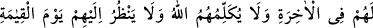
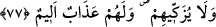

Allah’dan başka müessir (sebep) yoktur. Bu varlık yurdunda O’ndan başkası yoktur.”
demiş.
Güzel huylu Behlül ne güzel söylemiş:
O âriflik iddiasındaki bir cedelciye rastlamıştı.
Eğer o âriflik iddiâ eden, dostunu bilseydi,
Öz düşmanı nefsine uyup kavga çıkarmazdı.
Eğer Hakk’ın varlığından haberdar olsaydı.
Bütün yaratıkları yok sayar, sade O’na yönelirdi.
Bu kıssaya iyice vakıf olduysan, ikilik (dualite) örtüsünü kaldırıp Hakk’ın her şeyde
var olduğunu müşâhede etmek sûretiyle mutlak bir kimliğe ulaşıncaya kadar nefsinin
terbiyesine ihtimâm göster. Allah, cümlemize kendisini müşâhede etmeyi nasip eylesin.
77. Allah’a karşı verdikleri sözü ve yeminlerini az bir bedelle değiştirenlere
gelince, işte bunların âhirette bir payı yoktur. Kıyâmet günü Allah onlarla
konuşmayacak, onlara bakmayacak ve onları temize çıkarmayacaktır. Onlar için
acı bir azap vardır.
Yemin ederiz ki O’na îman edeceğiz; Ona yardımda bulunacağız tarzındaki
yeminlerini ve Hz. Muhammed’in peygamberliğine îman edip emânetleri yerine
getireceklerine dâir Allah’a verdikleri sözlerini alacakları az bir para, dünyâ metâı
karşılığında değiştirenler var ya, işte bu çirkin sıfatlarla dolu olanların âhirette ve âhiret
nimetlerinde hiçbir nasipleri yoktur. “Allah kıyâmet günü onlarla konuşmayacak.” Bu
ifade, Allah Teâlâ’nın gadab ve kızgınlığından kinâyedir. Neûzübillah.
“Onlara bakmayacak.” Bu ifade de, Allah’ın onları önemsememesi ve onlara gadab
etmesinden kinâyedir. “Ve onları tezkiye etmeyecektir.” Tezkiyecinin şâhidi övmesi
tarzında, Allah Teâlâ velî kullarını övdüğü gibi bunları övmeyecektir. Allah’ın
tezkiyesi, bazen melâike lisânıyla olur. Nitekim bir âyette: “Melekler, onların yanına
‘selamün aleyküm’ diyerek bütün kapılardan girerler.” buyurulmaktadır. (er-Râd,
13/23,24)
Bazen de vâsıtasız olur. Dünyadaki tezkiye için; “Tevbe edenler, ibâdet edenler” (et-
Tevbe, 9/112) âyeti örnek verilebilir. Âhiretteki tezkiye için ise; “Rahmet sahibi bir
Rab’den verilmiş bir selamdır bu.” (Yâsîn, 36/58) âyeti örnektir.
İşledikleri isyanlara karşılık “onlar için bir azap vardır.” Bu âyet-i kerîme, Tevrât’ı